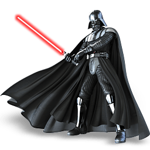

«Зоряні війни» (англ. Star Wars, МФА: [stɑːɹ wɔːɹz]) — медіафраншиза в жанрі епічної космічної опери, що включає 12 художніх фільмів (9 епізодів основної саги, також відома як «Сага Скайуокеров», 2 і 1 анімаційний), а також ігрові та анімаційні серіали, ігрові телефільми, документальні фільми, книги, комікси, відеоігри, атракціони, іграшки та інші твори, створені в рамках єдиного фантастичного всесвіту «Зоряних воєн», задуманого та реалізованого американським режисом Наприкінці 1970-х років, пізніше розширеною.
«Зоряні війни» посідають третє місце в історії з загальних касових зборів серед усіх кінофраншиз, поступаючись лише серією фільмів кінематографічного всесвіту Marvel та фільмам про Людину-Павука. У 2020 році загальна вартість франшизи «Зоряних воєн» оцінювалася в 70 мільярдів доларів США [1] і в даний час вона є п'ятою найкасовішою медіафраншизою.

На зображенні зображено Дарт Ве́йдера (англ. Darth Vader, 41 ДБЯ — 4 ПБЯ), також відомий під своїм справжнім ім'ям як Енакін Скайуокер (Anakin Skywalker) — центральний персонаж перших шести епізодів саги «Зоряні війни». Також з'являється у фільмі «Ізгой-один». У кіноепопеї «Зоряні війни» демонструються його становлення як лицаря-джедая, його перехід на Темну сторону Сили та його підсумкове спокута. Батько Люка Скайуокера та Леї Органи. Єдиний персонаж, що з'являється в 6 епізодах і спін-оффе «Ізгой-один» «у плоті».
Персонаж придумано Джорджем Лукасом. За однією з версій, ім'я Енакін скопійовано з прізвища друга Лукаса - режисера Кена Енакіна [4], проте сам Лукас це спростував наступного дня після смерті Кена [5]. Ім'я «Дарт Вейдер», згідно з опублікованими чернечками Джорджа Лукаса, було складено ним в результаті гри зі словами dark (рус. темний) / death (рус. смертельний) та invader (рус. загарбник) [6].
Багато лордів ситхів додавали приставку «Дарт» до своїх імен, і поступово через кількість «Дартів» вона стала асоціюватися з темною стороною Сили. Також ця приставка бралася як символ відмовитися від колишнього життя. Прикладом цього є і Енакін Скайуокер, який став Дартом Вейдером. Проте, саме внутрішньосвітове походження слова досі залишається невизначеним: більшість вважає, що «Дарт» (англ. Darth) — це скорочення від «Темний лорд ситхов» (англ. Dark Lord of the Sith).
Син Шмі Скайуокер. Енакін народився 42 ДБЯ. У розмові з Квай-Гон Джинном Шмі відмовляється говорити про батька хлопчика і стверджує, що Енакін не мав батька. У зв'язку з цим Квай-Гон зробив висновок, що Енакін був створений Силою. За твердженням Палпатіна в Епізоді III, Дарт Плегас, вчитель Дарта Сідіуса, навчився провокувати мідіхлоріани для того, щоб створювати життя і запобігати смерті. Однак у фільмі йдеться лише, що Енакін — велике осередок Сили у живій істоті. У книзі про Дарта Плегаса висувається версія, що Енакін був народжений Силою на противагу експериментам Плегаса і Сідіуса з управління мідіхлоріанами.